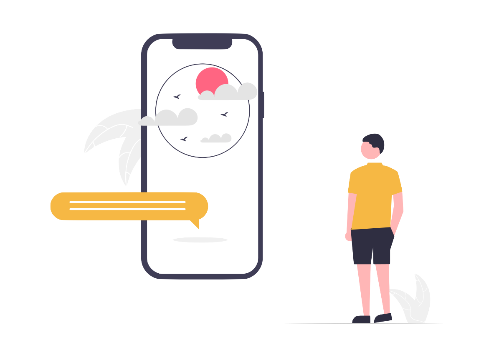

<ion-content style="--ion-background-color: #3B7E88;">
  <div class="image"> 
    

  </div>
  <div class="detail">
    <span style="color: #F6B844;">Find </span><span>weather forecast for your city</span>

    <p>Easy steps to predict the weather and make your day easier </p>
    <ion-button  [routerLink]="['/home']" color="primary">Get Started</ion-button>
  </div>
  
</ion-content>
